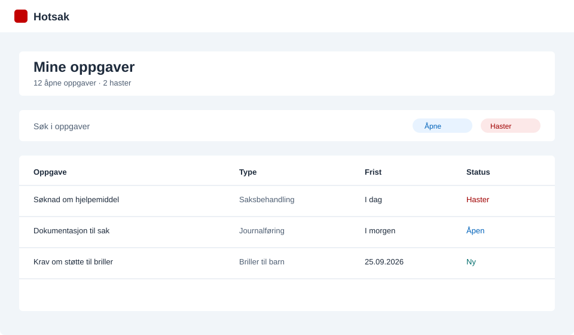
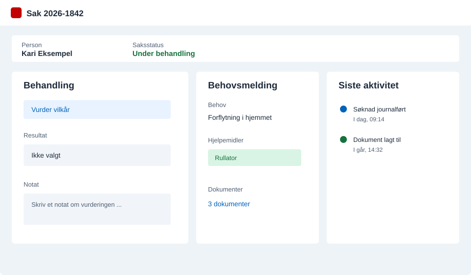
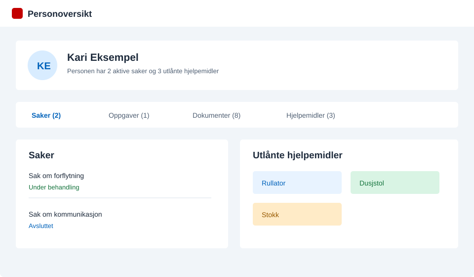
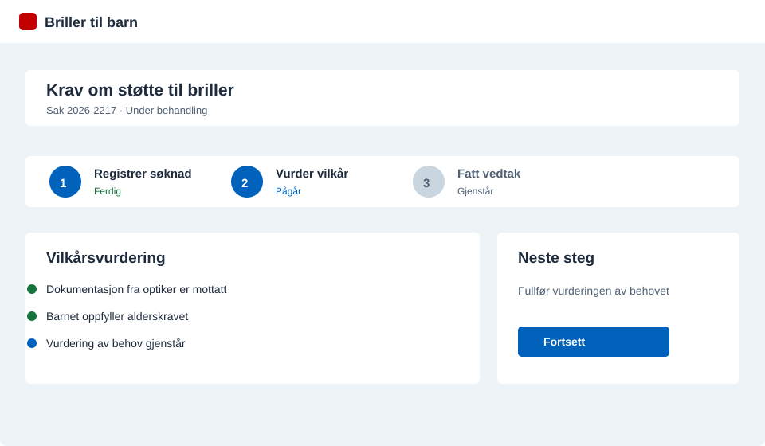

Finn og fordel oppgaver
Se dine egne oppgaver, enhetens oppgaver eller oppgaver som er tildelt medarbeidere. Filtrer på status, hastegrad og andre relevante opplysninger.
Hotsak
Hotsak hjelper ansatte på hjelpemiddelsentralene med å holde oversikt, behandle saker og følge opp personer fra oppgaven kommer inn til saken er ferdig.
Siden beskriver funksjonene i Hotsak. Selve applikasjonen krever intern tilgang i Nav.

Kjernefunksjonalitet
Du kan gå fra oppgave til ferdig behandling uten å bytte mellom flere arbeidsflater for å finne informasjonen du trenger.
Se dine egne oppgaver, enhetens oppgaver eller oppgaver som er tildelt medarbeidere. Filtrer på status, hastegrad og andre relevante opplysninger.
Registrer dokumenter, koble dem til en eksisterende sak eller opprett en ny sak. Dokumentet og opplysningene følger saken videre.
Se behovsmelding, kontaktinformasjon, dokumenter og tidligere aktivitet i samme saksbilde. Du kan også skrive notater og følge historikken.
Vurder vilkår, velg resultat, skriv brev og ferdigstill behandlingen. Hotsak viser hva som mangler før saken kan avsluttes.
Se oversikt over hjelpemidler personen har fått, og bruk informasjonen når du behandler nye behov eller følger opp en sak.
Behandle krav om støtte til briller for barn gjennom egne steg for registrering, vilkårsvurdering og vedtak.
Fra oppgave til resultat
Hotsak støtter de viktigste stegene i saksbehandlingen og gjør det synlig hva som er gjort, og hva som gjenstår.
Du finner oppgaven i oppgavelista og ser hva den gjelder.
Journalfør dokumenter og koble dem til riktig person og sak.
Se behov, vilkår, hjelpemidler og tidligere aktivitet mens du behandler saken.
Velg resultat, skriv brev og få oversikt over det som mangler før ferdigstilling.
Notater, dokumenter, historikk og hjelpemiddeloversikt er tilgjengelig videre.
Saksbildet
Saksbildet gir plass til både behandlingen og informasjonen du trenger for å ta en beslutning. Panelene kan åpnes og tilpasses arbeidsmåten din.

Personoversikt
Personoversikten gir en samlet visning av saker, oppgaver, dokumenter og utlånte hjelpemidler. Det gjør det enklere å finne riktig bakgrunn når du behandler en ny henvendelse.
Snakk med teamet om Hotsak →
Briller til barn
Hotsak støtter saksbehandling av brillesaker for barn med tydelige steg for registrering, vurdering og vedtak. Statusen viser hvor saken er og hva som skjer videre.

For deg som vil vite mer
Hotsak er bygget med teknologi som passer Navs plattform og gjør det mulig å utvikle, teste og drifte løsningen over tid.
Vil du vite mer?